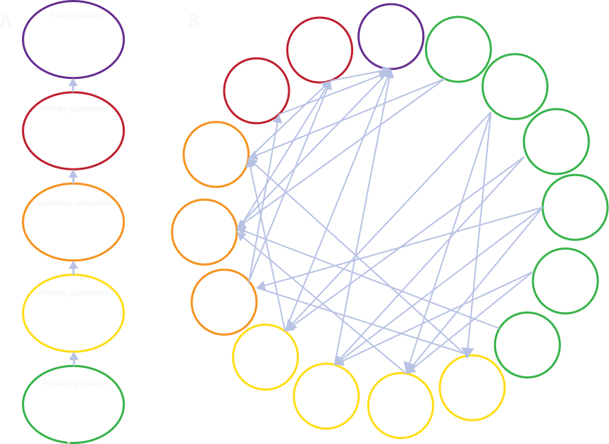

Food Webs
Food webs
Food webs are a valuable way to represent the complexity of biodiversity within a local wildlife community, by taking into account species and their interactions.
Food chains illustrate predator prey interactions where (A): primary producers are at the bottom of the food web (green, plants), followed by primary consumers (yellow, herbivorous arthropods), secondary consumers (orange, omnivores like quail), tertiary consumers (red, carnivores like foxes), and apex predators at the top (purple, top carnivores like mountain lions)1. Communities are made up of many food chains (B), and food webs are a useful tool to capture those complex interactions.

How we build a food web
How do we estimate a dynamic food web model for a given community within the Sierra Nevada? There are many different vegetation types present in the Central Sierra, to build a food webs for a given forest community within the Central Sierra we follow these five steps:
Step 1: Compile a regional list of species that live in central Sierra forests: this list includes all terrestrial species that live and breed live in central Sierra forests. This includes over 2,000 species of plants, invertebrates, mammals, reptiles, and birds. To compile our lists, we leverage data available in technical reports, USFS surveys, scientific literature, and Global Biodiversity Information Facility.
On the right, each dot represents a species in an example community organized by trophic position.

Step 2: Assign species to guilds: for each species we collect information on their behaviors, habits, predators, prey, and body size. Using this information we place each species into guilds with similar species.
Guilds represent groups of species that are similar – and perform similar functions within the community. For example, lodgepole chipmunk (left) and yellow-pine (right) chipmunks are small mammals who have similar behaviors, diets, predators, prey, habitats, and body size and are placed into a guild together.
To assign species into guilds we leverage information from scientific literature, trait databases, and expert opinions.
On the right, the large circles are guilds, and species (small circles) are each assigned to the same guild. The chipmunk species are examples of secondary consumers and would be in the large purple circle.

Step 3: Assign links between guilds: with extensive literature review and consulting with experts, we assign links between guilds to create a ‘metanetwork’.
For example, on the right, the arrows connecting the blue and green circles to the purple circle, indicates that chipmunks (purple circle) eat invertebrates (large blue circle) and seeds of plants (green circle). The arrows from the purple circle to the orange and yellow circles indicate that chipmunks can be eaten by weasels (orange circle) or bobcat (yellow circle).
The metanetwork represents all potential interactions between species.
Step 4: Subset the regional list to taxa that can occur in a specific vegetation type: for each species there is a probability that it can occur in a given vegetation type based on preference and occurrence patterns. Using these probabilities we can then subset the metanetwork to just include species (and their interactions) that can occur in a given forest type (seral stage & canopy density) at a given elevation. To assign these probabilities we leverage data available from the California Wildlife Habitat Relationships system, CalFlora, Calsape, and Jepson eFlora to name a few.
For example, Sierran mixed conifer is the primary forest type in the Sierra Nevada. Yellow-pine chipmunks have a higher probability to occur in this forest type, compared to the lodgepole chipmunk.

Step 5: Simulate species level network: from the metanetwork, we estimate the links between each consumer species and their prey, and create a food web for the community. We do this hundreds of times because this helps us to capture the spatial and temporal variation inherent in species interactions.
Food webs get complicated fast. Communities are made up of hundreds of interacting species and food webs can get complicated fast. However, measuring characteristics and structure of these species level networks can tell us about the health and resilience of these communities. Therefore, we use a series of metrics to quantify these communities.
:::
Footnotes
Image credits: Puma concolor - Moutain lion by Gabriela Palomo-Munoz CC BY 3.0, Vulpes vulpes - Red Fox by Rebecca Groom CC BY 3.0, Oreortyx pictus - Mountain Quail by Gabriela Palomo-Munoz CC BY 4.0, Oncopeltus fasciatus - Milkweed bug by Andy Wilson CC0 1.0 Universal Public Domain, Asclepias syriaca - Common Milkweed by Ian Medeiros CC BY 4.0.↩︎